<title>AKRHO Information System Guide</title>
<meta name="claude:viewport-fit-sides" content="cover">
<link rel="stylesheet" href="https://fonts.googleapis.com/css2?family=Barlow+Condensed:wght@500;600;700&family=IBM+Plex+Mono:wght@400;500&family=IBM+Plex+Sans:wght@400;500;600&display=swap">
<style>
/* Layout: a long-form field guide. Navy masthead, then one band per module:
   purpose + safeguards on the left, the module's real screens on the right.
   Palette and faces are the AIS app's own tokens (src/web/src/shared/tokens.css). */
:root {
  --bg: #EFEEEA; --paper: #FFFFFF; --ink: #0E1116; --slate: #39424F; --mute: #6B7480;
  --line: #DCDAD3; --deep: #171D28; --brass: #C39A3E; --brass-dk: #8E6D22; --brass-soft: #F0E5CB;
  --ok: #2E6B52; --bad: #A6392E; --warn: #8A6214; --warn-bg: #FBF1DC; --mast-fg: #F4F1EA;
  --f-disp: "Barlow Condensed", "Arial Narrow", system-ui, sans-serif;
  --f-body: "IBM Plex Sans", system-ui, -apple-system, "Segoe UI", sans-serif;
  --f-num: "IBM Plex Mono", ui-monospace, Menlo, monospace;
}
@media (prefers-color-scheme: dark) { :root:not([data-theme="light"]) {
  --bg: #12161D; --paper: #1A2029; --ink: #E9E7E1; --slate: #B9C0C9; --mute: #8D96A1;
  --line: #2C3440; --deep: #0B0E13; --brass: #D4AE57; --brass-dk: #D4AE57; --brass-soft: #2E2817;
  --ok: #6FB894; --bad: #E2857A; --warn: #E3B55B; --warn-bg: #2B2414; --mast-fg: #F4F1EA; color-scheme: dark } }
:root[data-theme="dark"] {
  --bg: #12161D; --paper: #1A2029; --ink: #E9E7E1; --slate: #B9C0C9; --mute: #8D96A1;
  --line: #2C3440; --deep: #0B0E13; --brass: #D4AE57; --brass-dk: #D4AE57; --brass-soft: #2E2817;
  --ok: #6FB894; --bad: #E2857A; --warn: #E3B55B; --warn-bg: #2B2414; --mast-fg: #F4F1EA; color-scheme: dark }

* { box-sizing: border-box; }
body { background: var(--bg); color: var(--ink); font-family: var(--f-body); font-size: 15.5px; line-height: 1.6; }
.wrap { max-width: 1180px; margin: 0 auto; padding-left: max(16px, env(safe-area-inset-left, 0px)); padding-right: max(16px, env(safe-area-inset-right, 0px)); }
h1, h2, h3 { font-family: var(--f-disp); font-weight: 600; letter-spacing: .02em; line-height: 1.1; text-wrap: balance; margin: 0; }
p { margin: 0; }
a { color: var(--brass-dk); }
.num { font-family: var(--f-num); font-variant-numeric: tabular-nums; }

/* Masthead */
.mast { background: var(--deep); color: var(--mast-fg); }
.mast .wrap { padding-block: 44px 36px; display: grid; gap: 14px; }
.eyebrow { font-family: var(--f-disp); text-transform: uppercase; letter-spacing: .22em; font-size: 13px; color: var(--brass); }
.mast h1 { font-size: clamp(36px, 6vw, 60px); }
.mast p { max-width: 68ch; color: #C9CDD3; }
.mast .meta { display: flex; flex-wrap: wrap; gap: 8px 22px; font-size: 13px; color: #9AA3AE; margin-top: 6px; }

/* Status board */
.status { padding-block: 34px 10px; display: grid; gap: 16px; }
.status h2 { font-size: 26px; }
.board { display: grid; grid-template-columns: repeat(auto-fill, minmax(250px, 1fr)); gap: 10px; }
.tile { background: var(--paper); border: 1px solid var(--line); border-radius: 10px; padding: 12px 14px; display: grid; gap: 4px; }
.tile b { font-weight: 600; }
.tile span { font-size: 13px; color: var(--slate); }
.pill { justify-self: start; font-family: var(--f-disp); font-size: 12px; letter-spacing: .12em; text-transform: uppercase; padding: 1px 8px; border-radius: 999px; }
.pill.live { color: var(--ok); border: 1px solid var(--ok); }
.pill.gap { color: var(--bad); border: 1px solid var(--bad); }
.note { background: var(--warn-bg); border: 1px solid var(--warn); border-radius: 10px; padding: 14px 16px; color: var(--ink); font-size: 14.5px; display: grid; gap: 6px; }
.note strong { color: var(--warn); font-family: var(--f-disp); letter-spacing: .1em; text-transform: uppercase; font-size: 13px; font-weight: 600; }

/* TOC */
.toc { padding-block: 22px 8px; }
.toc ol { list-style: none; padding: 0; margin: 0; display: flex; flex-wrap: wrap; gap: 8px; }
.toc a { display: inline-block; text-decoration: none; color: var(--ink); background: var(--paper); border: 1px solid var(--line); border-radius: 999px; padding: 4px 12px; font-size: 13.5px; }
.toc a:hover, .toc a:focus-visible { border-color: var(--brass); outline: none; }

/* Module bands */
section.mod { border-top: 1px solid var(--line); padding-block: 40px; }
.mod-head { display: grid; gap: 6px; margin-bottom: 18px; }
.mod-head .code { font-family: var(--f-num); font-size: 12.5px; color: var(--brass-dk); }
.mod-head h2 { font-size: clamp(28px, 4vw, 38px); }
.mod-head .who { font-size: 13.5px; color: var(--mute); }
.mod-body { display: grid; grid-template-columns: minmax(0, 5fr) minmax(0, 7fr); gap: 32px; align-items: start; }
@media (max-width: 860px) { .mod-body { grid-template-columns: minmax(0, 1fr); } }
.text { display: grid; gap: 16px; }
.text .purpose { font-size: 17px; color: var(--ink); max-width: 60ch; }
.text h3 { font-size: 15px; text-transform: uppercase; letter-spacing: .14em; color: var(--slate); font-weight: 600; }
.text ul { margin: 0; padding-left: 18px; display: grid; gap: 5px; max-width: 62ch; }
.text li::marker { color: var(--brass); }
.guard { border-left: 3px solid var(--brass); padding: 2px 0 2px 14px; display: grid; gap: 6px; }
.guard ul { padding-left: 16px; }
.talk { font-size: 14px; color: var(--slate); background: var(--paper); border: 1px solid var(--line); border-radius: 10px; padding: 12px 14px; }
.talk b { font-family: var(--f-disp); letter-spacing: .1em; text-transform: uppercase; font-size: 12.5px; color: var(--brass-dk); display: block; margin-bottom: 2px; }

/* Screens */
.shots { display: flex; gap: 14px; overflow-x: auto; padding-bottom: 8px; scroll-snap-type: x proximity; }
.shots.desk { flex-direction: column; overflow: visible; }
figure { margin: 0; flex: 0 0 auto; scroll-snap-align: start; display: grid; gap: 6px; }
.phone figure { width: 220px; }
.phone .frame { height: 470px; }
.desk .frame { max-height: 520px; }
.frame { border: 1px solid var(--line); border-radius: 12px; overflow: hidden; background: var(--paper); cursor: zoom-in; padding: 0; display: block; width: 100%; }
.frame:focus-visible { outline: 2px solid var(--brass); outline-offset: 2px; }
.frame img { display: block; width: 100%; height: auto; }
figcaption { font-size: 12.5px; color: var(--slate); line-height: 1.45; }
figcaption .num { color: var(--mute); font-size: 11.5px; display: block; }

/* Lightbox */
dialog { border: none; padding: 0; background: transparent; max-width: min(96vw, 1400px); max-height: 94vh; }
dialog::backdrop { background: rgba(8, 10, 14, .82); }
dialog img { display: block; max-width: min(96vw, 1400px); height: auto; border-radius: 10px; }
dialog .bar { display: flex; justify-content: space-between; gap: 12px; align-items: center; color: #F4F1EA; font-size: 13.5px; padding: 8px 2px; position: sticky; top: 0; background: rgba(8,10,14,.9); }
dialog button { font: inherit; color: #F4F1EA; background: transparent; border: 1px solid #5B6370; border-radius: 8px; padding: 4px 12px; cursor: pointer; }

footer { border-top: 1px solid var(--line); padding-block: 28px 48px; font-size: 13.5px; color: var(--mute); display: grid; gap: 8px; }
@media (prefers-reduced-motion: no-preference) { html { scroll-behavior: smooth; } }
</style>

<header class="mast">
  <div class="wrap">
    <div class="eyebrow">Alpha Kappa Rho · Leadership Seminar</div>
    <h1>AKRHO Information System &amp; Central Portal</h1>
    <p>A module-by-module guide to what the system does today, with screens from the actual application. Two systems share one database: the <b>AIS</b>, which every chapter member uses on his phone, and the <b>Central Portal</b>, which councils use to register chapters, seat officers and oversee their jurisdiction.</p>
    <div class="meta"><span>Prepared 31 October 2026</span><span>Source: branch <span class="num">ccr-37208aaa-ew5604</span></span><span>Click any screen to enlarge</span></div>
  </div>
</header>

<main>
<div class="wrap status">
  <h2>What is ready, and what is not</h2>
  <div class="note">
    <strong>Read this before presenting</strong>
    <p><b>Annual renewal is not usable yet.</b> Its database tables and three stored procedures exist (submit, approve, working-day escalation clock), but there is no screen and no API for it. No one can submit or approve a renewal from the app today, so there is nothing to screenshot. Present it as the next milestone, not as a working feature.</p>
    <p><b>About these screenshots:</b> they are the real AIS and Portal screens, rendered from the current code. The names, amounts and cases are demo data built on the seeded demo chapter (Brgy. San Isidro, Sta. Rosa, Laguna). No real member's information appears anywhere in this guide.</p>
  </div>
  <div class="board">
    <div class="tile"><span class="pill live">Working</span><b>Member registration &amp; tracking</b><span>Join link, applications, directory, profiles, officers</span></div>
    <div class="tile"><span class="pill live">Working</span><b>Corrective action management</b><span>Filing, status timeline, restricted narrative</span></div>
    <div class="tile"><span class="pill live">Working</span><b>Digital ID &amp; QR verification</b><span>ID card, in-app scan, public verify page</span></div>
    <div class="tile"><span class="pill live">Working</span><b>Attendance &amp; meetings</b><span>Attendance sheet, voluntary contributions</span></div>
    <div class="tile"><span class="pill live">Working</span><b>Financial records</b><span>Ledger, activities, expenses, donations</span></div>
    <div class="tile"><span class="pill live">Working</span><b>Announcements &amp; communication</b><span>Notices, urgent blood requests, memos, chat</span></div>
    <div class="tile"><span class="pill live">Working</span><b>Chapter &amp; council management</b><span>Registration, routing, councils, rosters, statistics</span></div>
    <div class="tile"><span class="pill gap">Not built</span><b>Annual renewal</b><span>Database only: no screen, no API</span></div>
    <div class="tile"><span class="pill gap">Not built</span><b>Two-factor sign-in</b><span>Planned for officer roles; not in the code yet</span></div>
    <div class="tile"><span class="pill gap">Not built</span><b>Commemorative year card</b><span>Not in the code yet</span></div>
  </div>
</div>

<nav class="wrap toc" aria-label="Modules">
  <ol>
    <li><a href="#access">Access &amp; onboarding</a></li>
    <li><a href="#home">Home &amp; dashboard</a></li>
    <li><a href="#members">Member registration &amp; tracking</a></li>
    <li><a href="#discipline">Corrective action</a></li>
    <li><a href="#digital-id">Digital ID &amp; QR</a></li>
    <li><a href="#attendance">Attendance &amp; meetings</a></li>
    <li><a href="#finance">Financial records</a></li>
    <li><a href="#notices">Announcements &amp; chat</a></li>
    <li><a href="#portal">Chapter &amp; council management</a></li>
    <li><a href="#renewal">Annual renewal</a></li>
  </ol>
</nav>

<!-- ============ ACCESS ============ -->
<section class="mod" id="access"><div class="wrap">
  <div class="mod-head"><span class="code">AIS · /sign-in · /register-chapter · /enrol</span><h2>Access &amp; onboarding</h2><span class="who">Used by: every member; founding officers of a new chapter</span></div>
  <div class="mod-body">
    <div class="text">
      <p class="purpose">Gets a brother into the system without anyone ever sending a password. A new chapter registers itself with the same information as the paper form, and each officer receives a one-time link to set up his own account.</p>
      <div><h3>Key features</h3><ul>
        <li>Sign in with a member number or the mobile number on file.</li>
        <li>Public chapter registration in three steps: chapter details and location, officer roster, review. Includes choosing the chapter mark colour.</li>
        <li>Applicants can check the status of a registration or application with a reference number.</li>
        <li>Enrolment link: one-time, valid 72 hours, tied to the officer's mobile number. He sets his own password.</li>
        <li>Installable on Android and iPhone as an app (PWA).</li>
      </ul></div>
      <div class="guard"><h3>Safeguards</h3><ul>
        <li>Passwords are never sent by anyone. Accounts are never shared or handed over at officer turnover.</li>
      </ul></div>
    </div>
    <div class="shots phone">
      <figure><button class="frame" type="button">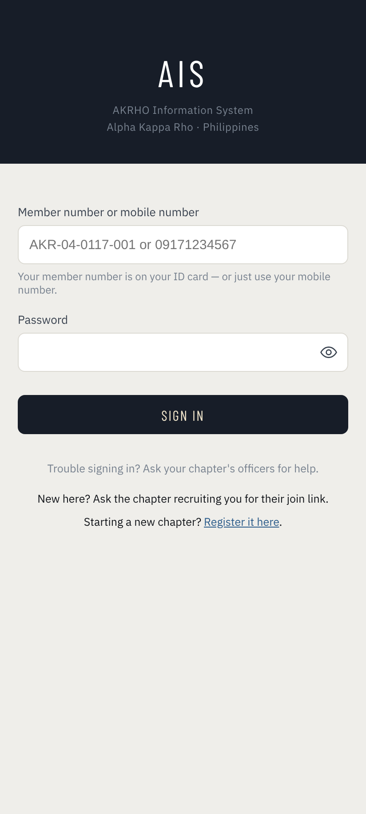</button><figcaption><span class="num">01</span>Sign in with member number or mobile</figcaption></figure>
      <figure><button class="frame" type="button">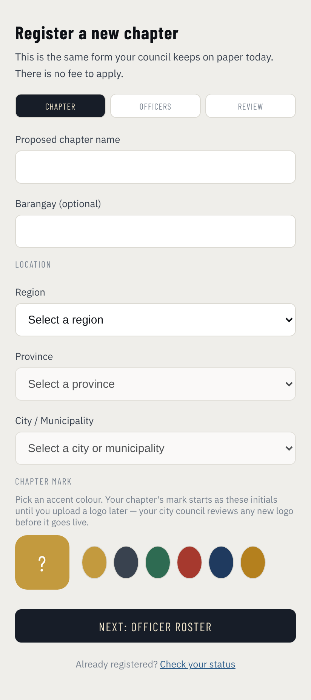</button><figcaption><span class="num">28</span>Register a new chapter, step 1 of 3</figcaption></figure>
    </div>
  </div>
</div></section>

<!-- ============ HOME ============ -->
<section class="mod" id="home"><div class="wrap">
  <div class="mod-head"><span class="code">AIS · / · /dashboard</span><h2>Home &amp; chapter dashboard</h2><span class="who">Used by: every member of the chapter</span></div>
  <div class="mod-body">
    <div class="text">
      <p class="purpose">One screen that tells a member what is happening in his chapter: the current fund balance, the latest notices and meetings, and shortcuts to his ID and the chapter chat. The dashboard gives the same chapter-wide picture for any period.</p>
      <div><h3>Key features</h3><ul>
        <li>Greeting by gift name, chapter funds balance, unread messages.</li>
        <li>Quick actions for officers: new meeting, expense, donation, announcement.</li>
        <li>Dashboard by membership year (9 August to 8 August): funds in and out, membership counts, meetings and attendance, corrective action counts by status.</li>
      </ul></div>
      <div class="guard"><h3>Safeguards</h3><ul>
        <li>Every member sees the same books. Transparency is the default, not a privilege.</li>
        <li>Dashboard figures are chapter totals only, never a per-member number.</li>
      </ul></div>
      <p class="talk"><b>Talking point</b>The fund balance on the home screen is the same figure every brother sees, and every peso behind it can be traced to an entry.</p>
    </div>
    <div class="shots phone">
      <figure><button class="frame" type="button">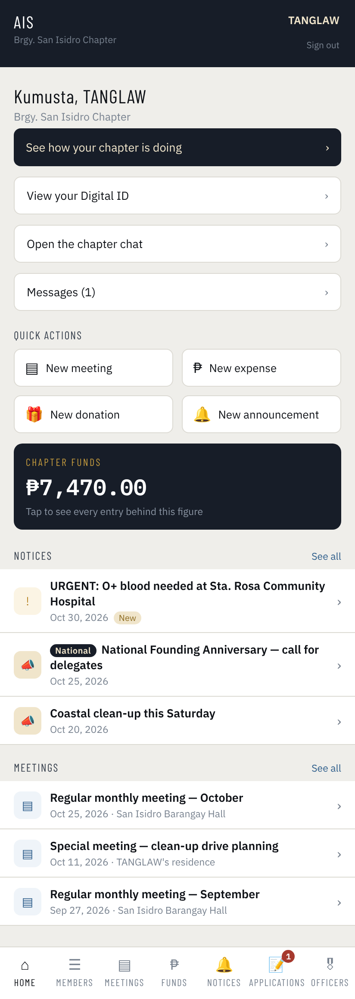</button><figcaption><span class="num">02</span>Home: funds, notices, meetings</figcaption></figure>
      <figure><button class="frame" type="button">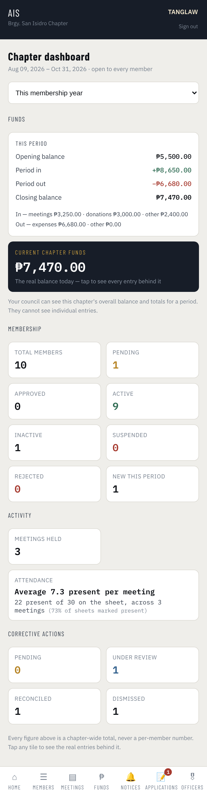</button><figcaption><span class="num">03</span>Chapter dashboard for the membership year</figcaption></figure>
    </div>
  </div>
</div></section>

<!-- ============ MEMBERS ============ -->
<section class="mod" id="members"><div class="wrap">
  <div class="mod-head"><span class="code">AIS · /members · /profile · /invite · /applications · /officers/manage</span><h2>Member registration &amp; tracking</h2><span class="who">Used by: all members (directory, profile); Chapter Admin (applications, invite link, officers)</span></div>
  <div class="mod-body">
    <div class="text">
      <p class="purpose">The chapter is where member records are created and kept. A brother applies through his chapter's join link, the Chapter Admin approves him, and from then on his record (status, renewal, blood type, skills) lives in one place that the councils read from.</p>
      <div><h3>Key features</h3><ul>
        <li><b>Invite link and QR:</b> one permanent join link per chapter, which the Chapter Admin can regenerate.</li>
        <li><b>Application form:</b> legal name, gift name, date survive, president and master initiator at survive, and a seconder from the chapter.</li>
        <li><b>Approval queue:</b> approve, return for correction, or reject with a reason. The seconder's member number is checked against the roster. Approval issues the new member's enrolment link.</li>
        <li><b>Directory:</b> filter by blood type or status; message a brother; officers can edit identity details and resend an enrolment link.</li>
        <li><b>Profile:</b> the member keeps his own contact details, blood type (with a confirmation step), skills and photo up to date.</li>
        <li><b>Officers:</b> seat or unseat the eight offices. Master Initiators are recorded with no login; the Auditor is read-only.</li>
      </ul></div>
      <div class="guard"><h3>Safeguards</h3><ul>
        <li>Only a chapter can create a member. No council can enrol anybody.</li>
        <li>Members from other chapters appear with name, chapter and status only: no contact details, no blood type.</li>
      </ul></div>
    </div>
    <div class="shots phone">
      <figure><button class="frame" type="button">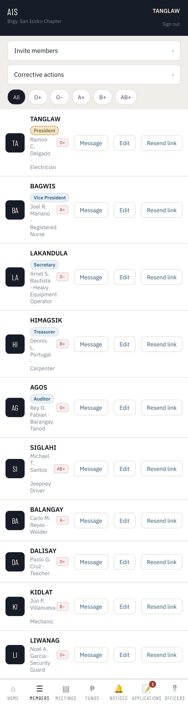</button><figcaption><span class="num">04</span>Chapter member directory</figcaption></figure>
      <figure><button class="frame" type="button">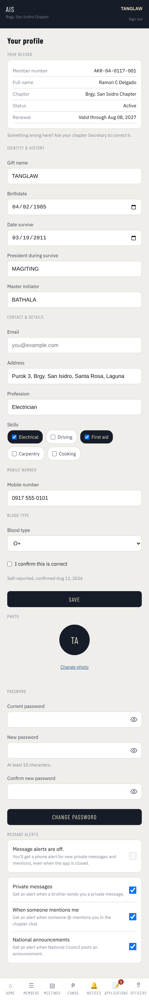</button><figcaption><span class="num">05</span>Member's own profile</figcaption></figure>
      <figure><button class="frame" type="button">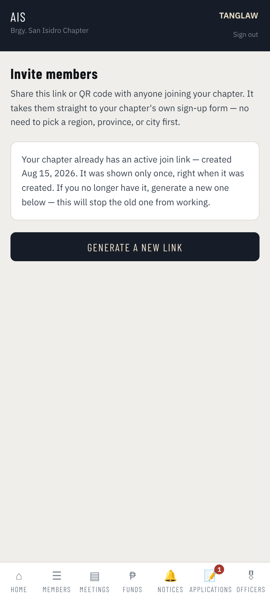</button><figcaption><span class="num">09</span>Chapter join link</figcaption></figure>
      <figure><button class="frame" type="button">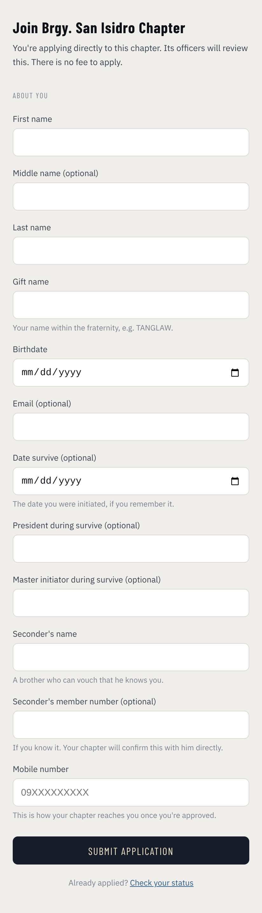</button><figcaption><span class="num">06</span>Application form from the join link</figcaption></figure>
      <figure><button class="frame" type="button">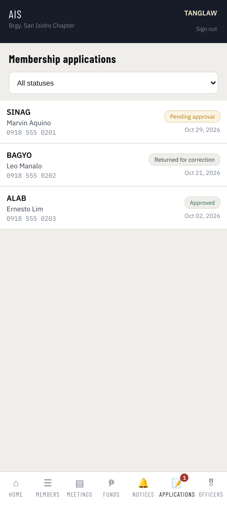</button><figcaption><span class="num">07</span>Membership applications queue</figcaption></figure>
      <figure><button class="frame" type="button">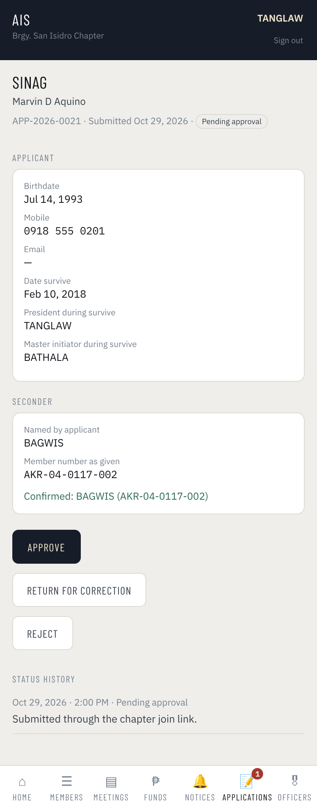</button><figcaption><span class="num">08</span>Review: approve, return or reject</figcaption></figure>
      <figure><button class="frame" type="button">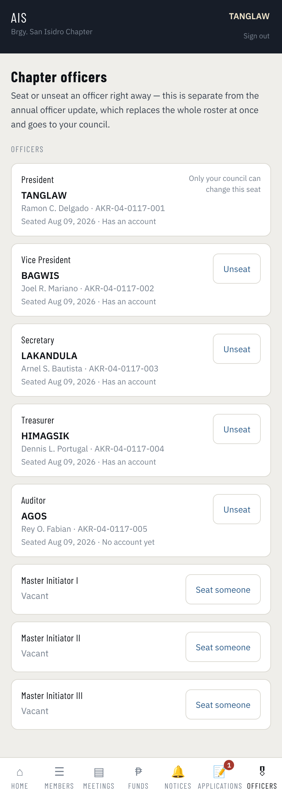</button><figcaption><span class="num">10</span>Chapter officer roster</figcaption></figure>
    </div>
  </div>
</div></section>

<!-- ============ DISCIPLINE ============ -->
<section class="mod" id="discipline"><div class="wrap">
  <div class="mod-head"><span class="code">AIS · /corrective-actions</span><h2>Corrective action management</h2><span class="who">Used by: Chapter Admin (filing, updates); all members (summary view)</span></div>
  <div class="mod-body">
    <div class="text">
      <p class="purpose">A fair, permanent record of disciplinary matters. Everyone can see that a case exists and where it stands; only the people who need the details can read them.</p>
      <div><h3>Key features</h3><ul>
        <li>File a case: brother concerned, category, date, and a factual account of what happened.</li>
        <li>Four statuses: Pending, Under Review, Reconciled, Dismissed.</li>
        <li>Every status change or note is added to a dated timeline, showing who made it.</li>
        <li>Case counts by status roll up to the chapter dashboard and council statistics.</li>
      </ul></div>
      <div class="guard"><h3>Safeguards</h3><ul>
        <li>A corrective action is never deleted. Corrections are added to the timeline, which keeps the full history.</li>
        <li>All members see name, category, status and date. The written account goes only to officers and the brother concerned.</li>
      </ul></div>
      <p class="talk"><b>Talking point</b>"Reconciled" is a status in its own right. The system is built to record how a matter was settled, not only how it started.</p>
    </div>
    <div class="shots phone">
      <figure><button class="frame" type="button">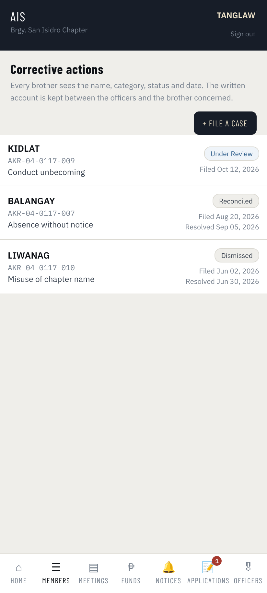</button><figcaption><span class="num">11</span>Case list with status</figcaption></figure>
      <figure><button class="frame" type="button">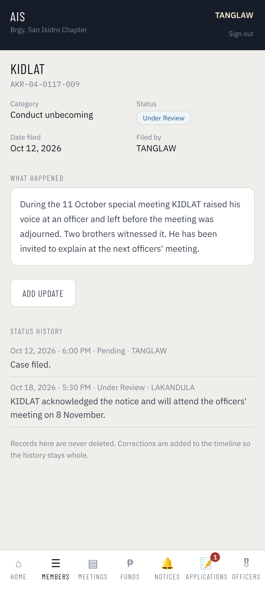</button><figcaption><span class="num">12</span>Case detail and timeline (officer view)</figcaption></figure>
      <figure><button class="frame" type="button">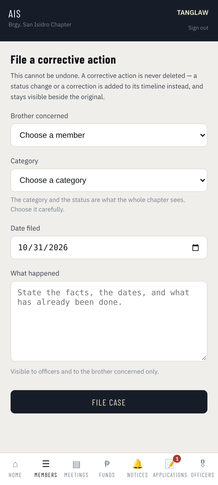</button><figcaption><span class="num">13</span>Filing a new case</figcaption></figure>
    </div>
  </div>
</div></section>

<!-- ============ DIGITAL ID ============ -->
<section class="mod" id="digital-id"><div class="wrap">
  <div class="mod-head"><span class="code">AIS · /digital-id · /scan · public /verify</span><h2>Digital ID &amp; QR code verification</h2><span class="who">Used by: every member; anyone checking a card, including non-members</span></div>
  <div class="mod-body">
    <div class="text">
      <p class="purpose">Proof of current standing that lives on the brother's phone. The front shows who he is; the back carries a QR code that anyone can scan to confirm the card is genuine and current.</p>
      <div><h3>Key features</h3><ul>
        <li>ID card front: gift name, legal name, member number, blood type, date survive, status, renewal date.</li>
        <li>Tap to flip to the QR side.</li>
        <li><b>Scan a brother's ID</b> inside the app: a green, red or grey result. A brother from the same chapter also shows member number, full name and blood type.</li>
        <li><b>Public verification page:</b> anyone scanning with a normal phone camera sees photo, gift name, chapter and status, and nothing more.</li>
        <li>Works on iPhone too, through a built-in scanner fallback.</li>
        <li>Council Admins can export ID card data and photos for printed cards (see the Portal section).</li>
      </ul></div>
      <div class="guard"><h3>Safeguards</h3><ul>
        <li>The QR code holds no personal data, only an anonymous reference.</li>
        <li>The card updates itself: a suspended card can never be shown as active.</li>
        <li>Only the digital ID proves current standing. A commemorative card will never be verifiable.</li>
      </ul></div>
    </div>
    <div class="shots phone">
      <figure><button class="frame" type="button">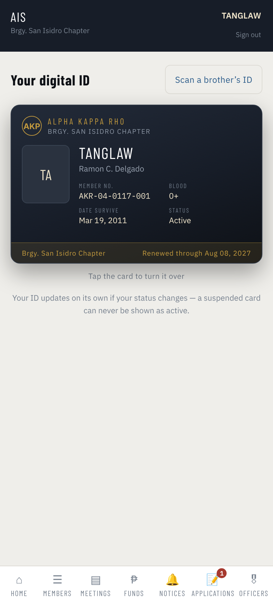</button><figcaption><span class="num">14</span>Digital ID, front</figcaption></figure>
      <figure><button class="frame" type="button">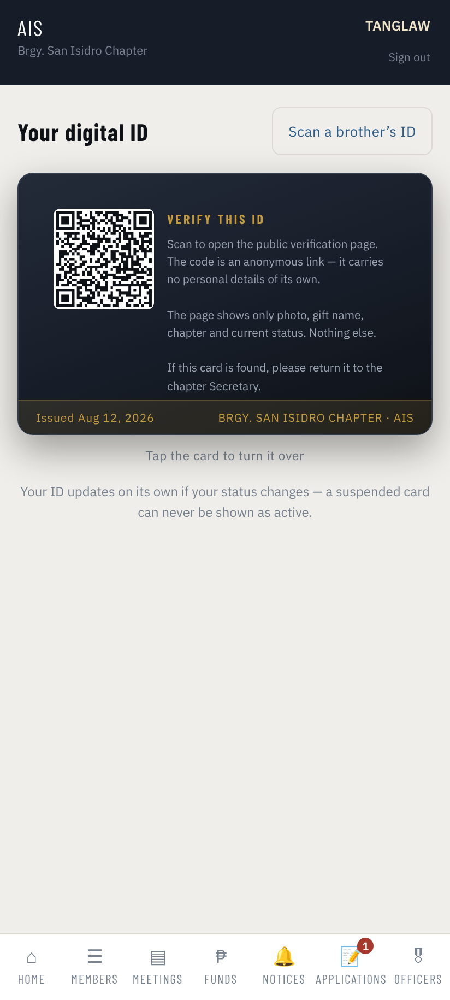</button><figcaption><span class="num">14b</span>Digital ID, back with QR code</figcaption></figure>
      <figure><button class="frame" type="button">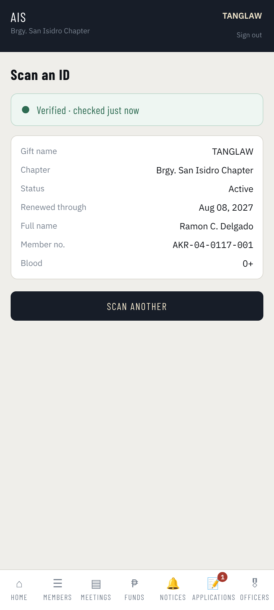</button><figcaption><span class="num">15</span>In-app scan: verified</figcaption></figure>
      <figure><button class="frame" type="button"></button><figcaption><span class="num">16</span>Public verification page</figcaption></figure>
    </div>
  </div>
</div></section>

<!-- ============ ATTENDANCE ============ -->
<section class="mod" id="attendance"><div class="wrap">
  <div class="mod-head"><span class="code">AIS · /meetings</span><h2>Attendance &amp; meetings</h2><span class="who">Used by: chapter officers (record); Chapter Admin (finalize); Treasurer (reopen); all members (view)</span></div>
  <div class="mod-body">
    <div class="text">
      <p class="purpose">A digital attendance sheet for each meeting, together with what each brother chose to contribute. When the meeting is finalized, the total goes into the chapter books as one entry.</p>
      <div><h3>Key features</h3><ul>
        <li>Meeting list with date, venue, present and late counts, and amount collected.</li>
        <li>Mark each brother Present, Late, Excused or Absent; record his contribution.</li>
        <li>Finalizing posts the collection total to the ledger.</li>
        <li>A finalized meeting can be reopened with a reason. That reverses its ledger entry, and the reopening stays on record.</li>
      </ul></div>
      <div class="guard"><h3>Safeguards</h3><ul>
        <li><b>Contributions are voluntary.</b> A zero or blank amount is a normal, complete record. The system never computes, shows or implies arrears.</li>
      </ul></div>
      <p class="talk"><b>Talking point</b>The screen itself says it: "an amount of ₱0.00 is a normal, complete record, not a missing one."</p>
    </div>
    <div class="shots phone">
      <figure><button class="frame" type="button">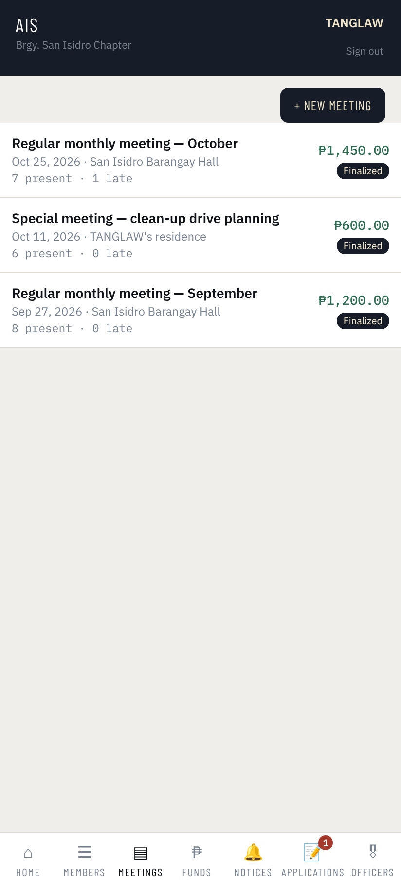</button><figcaption><span class="num">17</span>Meetings list</figcaption></figure>
      <figure><button class="frame" type="button">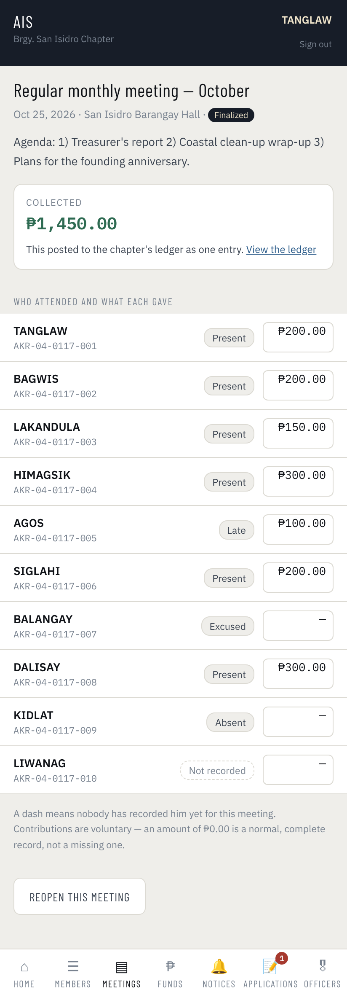</button><figcaption><span class="num">18</span>Attendance and contributions</figcaption></figure>
    </div>
  </div>
</div></section>

<!-- ============ FINANCE ============ -->
<section class="mod" id="finance"><div class="wrap">
  <div class="mod-head"><span class="code">AIS · /ledger · /activities · /expenses · /donations</span><h2>Financial records</h2><span class="who">Used by: Treasurer and Chapter Admin (record); Chapter Admin (void); all members (view)</span></div>
  <div class="mod-body">
    <div class="text">
      <p class="purpose">Open books for the whole chapter. Every peso in or out is an entry in one running ledger, linked to the meeting, expense or donation it came from, with receipts attached.</p>
      <div><h3>Key features</h3><ul>
        <li><b>Ledger:</b> the running balance and every entry behind it, in pesos (₱).</li>
        <li><b>Activities:</b> group money by project (for example a feeding program or a clean-up drive) to see funds raised and spent for each.</li>
        <li><b>Expenses:</b> payee, category, activity, amount and receipt photos.</li>
        <li><b>Donations:</b> cash or in-kind, donor type (official, private, business, member) and chapter receipt number.</li>
        <li>Councils see a chapter's balance and period totals, not individual entries.</li>
      </ul></div>
      <div class="guard"><h3>Safeguards</h3><ul>
        <li><b>The ledger is append-only.</b> Nothing can be edited or deleted. A mistake is voided with a reason, which adds a reversing entry next to the original so both stay visible.</li>
        <li>Every write is recorded in an audit log.</li>
      </ul></div>
      <p class="talk"><b>Talking point</b>Screen 19 shows a duplicate expense that was voided. The error and its correction both stay in the books.</p>
    </div>
    <div class="shots phone">
      <figure><button class="frame" type="button">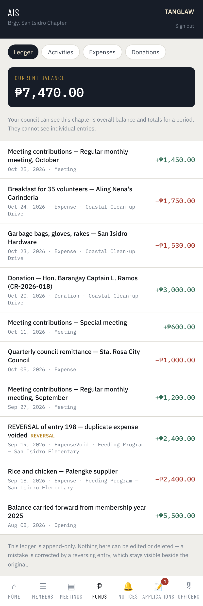</button><figcaption><span class="num">19</span>Ledger with a reversal entry</figcaption></figure>
      <figure><button class="frame" type="button">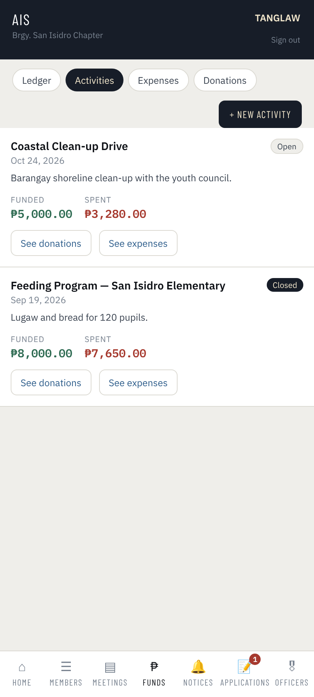</button><figcaption><span class="num">20</span>Activities: funded and spent</figcaption></figure>
      <figure><button class="frame" type="button">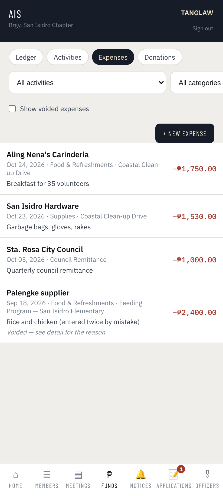</button><figcaption><span class="num">21</span>Expenses</figcaption></figure>
      <figure><button class="frame" type="button">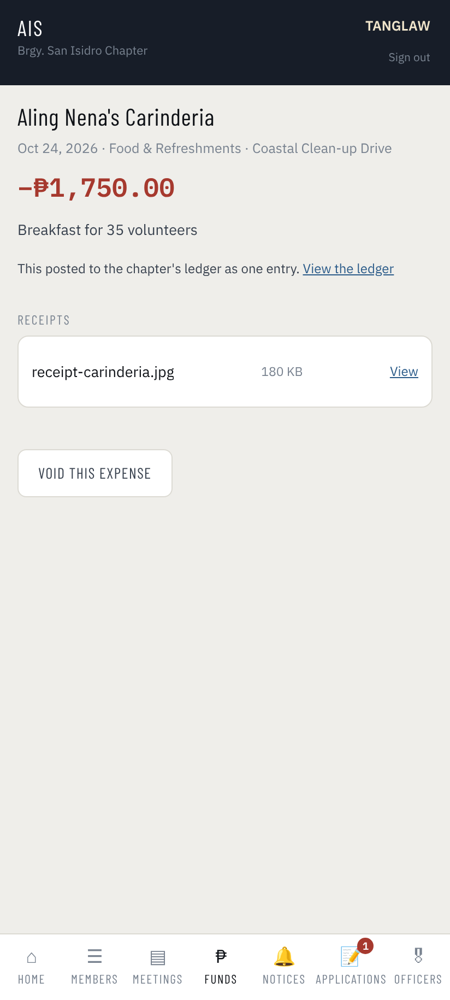</button><figcaption><span class="num">22</span>Expense with receipt attached</figcaption></figure>
      <figure><button class="frame" type="button">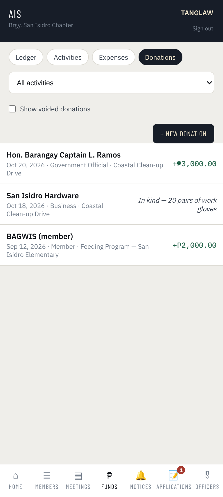</button><figcaption><span class="num">23</span>Donations, cash and in-kind</figcaption></figure>
    </div>
  </div>
</div></section>

<!-- ============ NOTICES ============ -->
<section class="mod" id="notices"><div class="wrap">
  <div class="mod-head"><span class="code">AIS · /announcements · /memos · /chat · /conversations</span><h2>Announcements, memos &amp; chat</h2><span class="who">Used by: officers (post); all members (read, chat); National Council (national notices)</span></div>
  <div class="mod-body">
    <div class="text">
      <p class="purpose">The chapter's notice board, filing cabinet and group chat in one place, so officers know who has actually read an announcement and urgent requests reach the right brothers fast.</p>
      <div><h3>Key features</h3><ul>
        <li><b>Announcements</b> with expiry dates, editing and withdrawal. National Council notices appear with a "National" badge.</li>
        <li><b>Urgent requests:</b> blood requests tagged with the blood type needed, or a general request for assistance.</li>
        <li><b>Read receipts:</b> officers see who has read each notice and when.</li>
        <li><b>Memos:</b> numbered official memos. A new memo can supersede an older one, and the old one is marked as replaced.</li>
        <li><b>Chapter chat</b> with @mentions, flagging and an officer moderation queue; <b>private messages</b> between brothers.</li>
        <li>Phone notifications for messages, mentions and national announcements, set by each member.</li>
      </ul></div>
    </div>
    <div class="shots phone">
      <figure><button class="frame" type="button">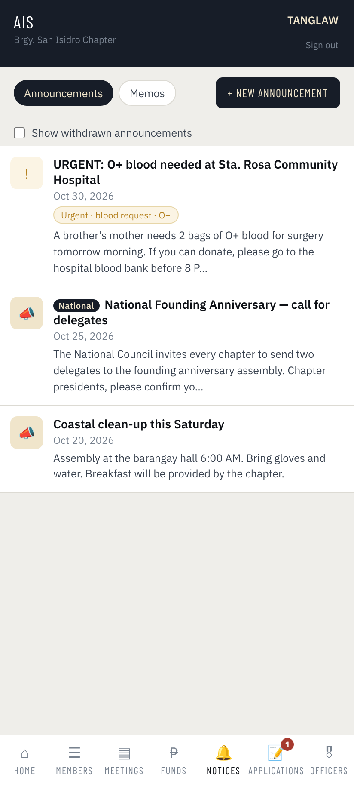</button><figcaption><span class="num">24</span>Announcements</figcaption></figure>
      <figure><button class="frame" type="button">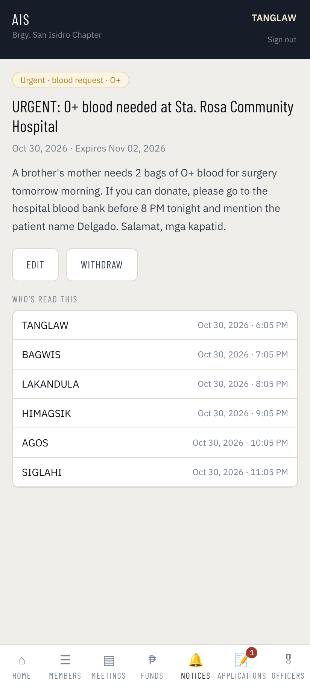</button><figcaption><span class="num">25</span>Urgent blood request and read receipts</figcaption></figure>
      <figure><button class="frame" type="button">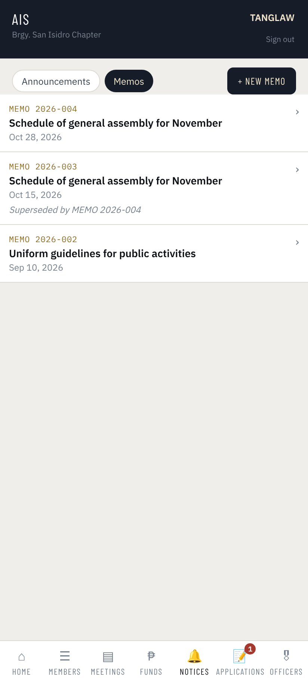</button><figcaption><span class="num">26</span>Numbered memos, one superseded</figcaption></figure>
      <figure><button class="frame" type="button">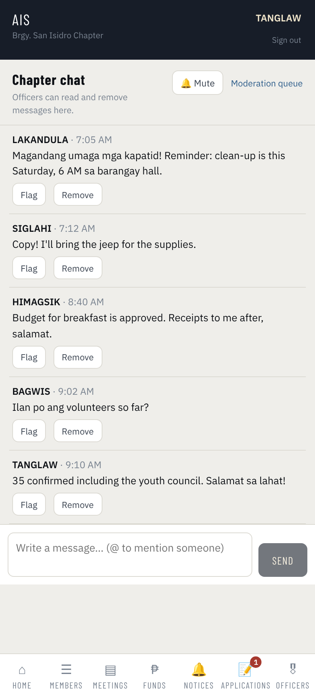</button><figcaption><span class="num">27</span>Chapter chat</figcaption></figure>
    </div>
  </div>
</div></section>

<!-- ============ PORTAL ============ -->
<section class="mod" id="portal"><div class="wrap">
  <div class="mod-head"><span class="code">Central Portal · /portal/*</span><h2>Chapter &amp; council management</h2><span class="who">Used by: council officers (City/Municipal, Provincial, Regional, National)</span></div>
  <div class="mod-body">
    <div class="text">
      <p class="purpose">The councils' system. It covers approving new chapters and officer turnovers, keeping the council tree and its officers, and overseeing members and chapters within each council's own jurisdiction. It reads chapter records and never re-keys them.</p>
      <div><h3>Key features</h3><ul>
        <li><b>Chapter registrations:</b> new chapter petitions and annual officer updates. The council verifies each officer one by one, then approves or returns the registration with a reason. Approval issues the President's enrolment link.</li>
        <li><b>Approval routing:</b> a registration goes to the nearest council above it that has seated officers. If the city council is dormant, the provincial council acts instead, and the screen explains why (screen 31b).</li>
        <li><b>Council registry and roster:</b> the National, Regional, Provincial and City/Municipal tree; seat and unseat council officers.</li>
        <li><b>Seat override log:</b> an officer seated from outside the council's jurisdiction is allowed, with a reason that stays on permanent record.</li>
        <li><b>Statistics:</b> roll-ups for the council and every chapter under it: members, renewal status, meetings, attendance, balances, cases.</li>
        <li><b>Member search</b> across the jurisdiction, with account block, unblock and password-reset links.</li>
        <li><b>Chapter holds:</b> put a chapter on hold (signs out and blocks its members), with a recorded reason.</li>
        <li><b>ID card export</b> (ZIP of data and photos) and <b>national announcements</b>.</li>
      </ul></div>
      <div class="guard"><h3>Safeguards</h3><ul>
        <li>A body cannot be registered before the body above it: National, Regional, Provincial, City, Chapter, Member.</li>
        <li>A council needs at least one registered chapter in its jurisdiction before it can be created.</li>
        <li>Councils and chapters are never deleted. A reorganized council is marked Dissolved and keeps its history.</li>
        <li>Every council sees only its own subtree.</li>
      </ul></div>
      <p class="talk"><b>Talking point</b>A dormant council does not stop the organization. The next active council up the line steps in automatically, and the record shows that it did.</p>
    </div>
    <div class="shots desk">
      <figure><button class="frame" type="button">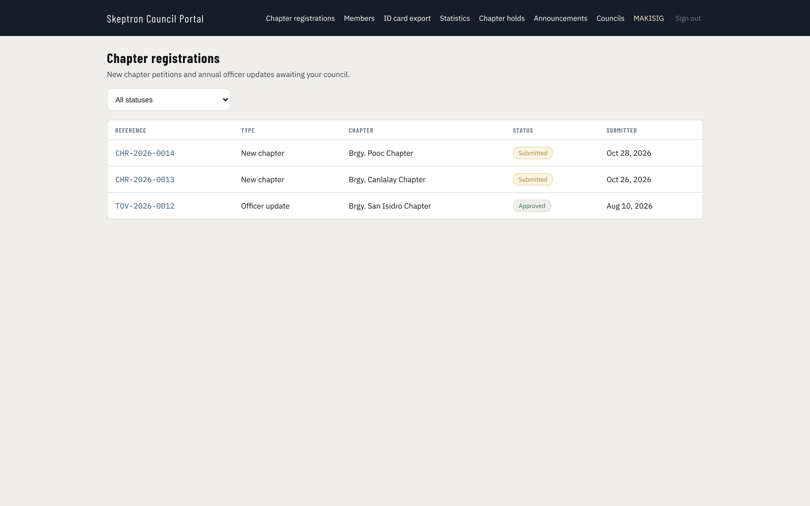</button><figcaption><span class="num">30</span>Chapter registrations queue</figcaption></figure>
      <figure><button class="frame" type="button">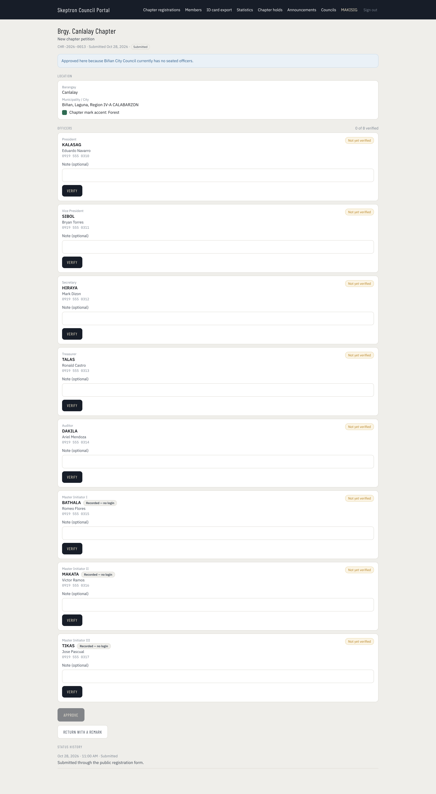</button><figcaption><span class="num">31b</span>Registration routed past a dormant city council</figcaption></figure>
      <figure><button class="frame" type="button">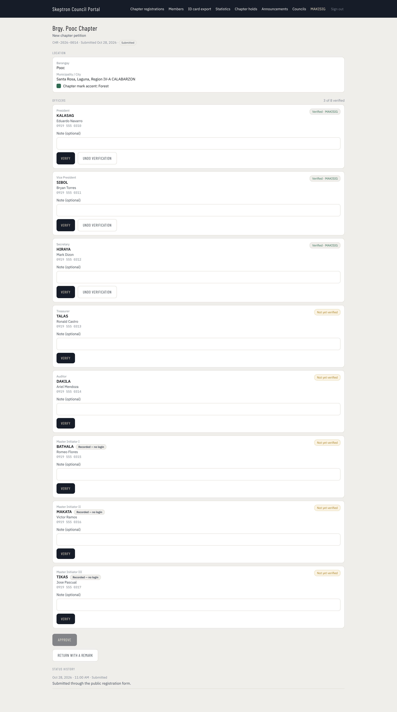</button><figcaption><span class="num">31</span>Verifying officers one by one</figcaption></figure>
      <figure><button class="frame" type="button">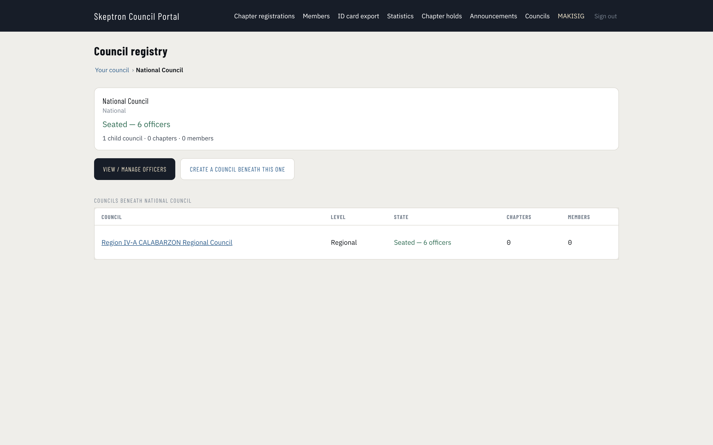</button><figcaption><span class="num">32</span>Council registry</figcaption></figure>
      <figure><button class="frame" type="button">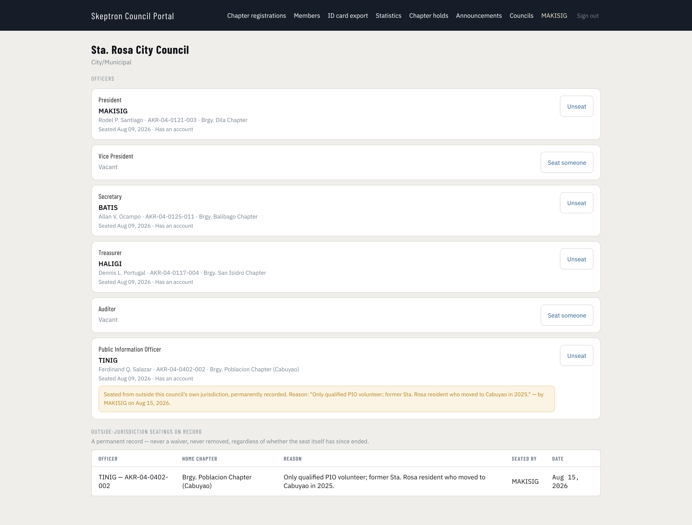</button><figcaption><span class="num">33</span>Council roster and seat-override record</figcaption></figure>
      <figure><button class="frame" type="button">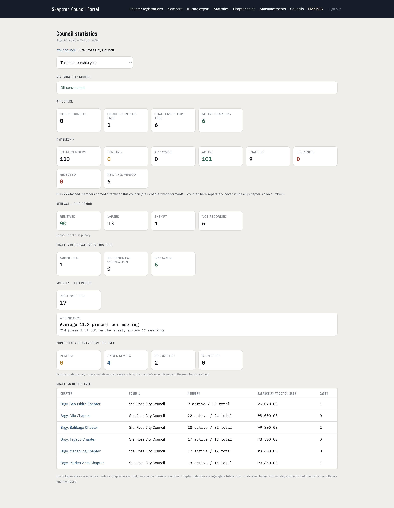</button><figcaption><span class="num">34</span>Council statistics</figcaption></figure>
      <figure><button class="frame" type="button">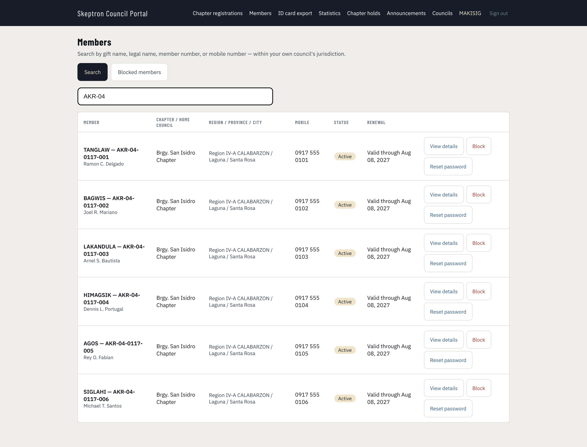</button><figcaption><span class="num">35</span>Member search within the jurisdiction</figcaption></figure>
      <figure><button class="frame" type="button">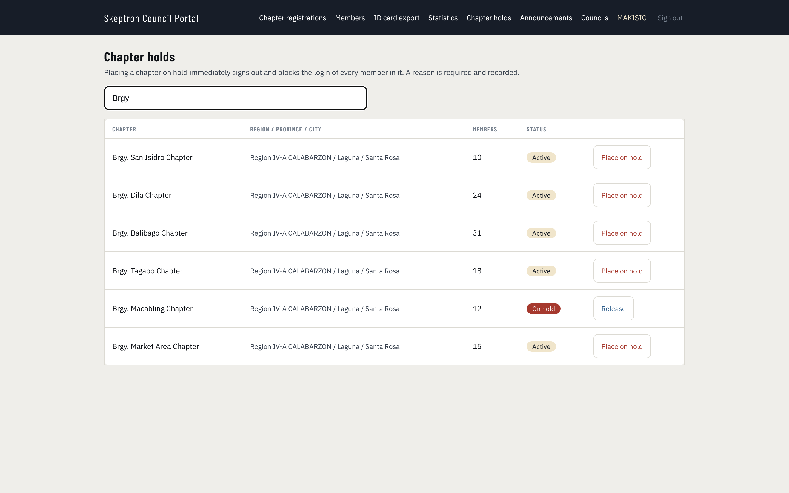</button><figcaption><span class="num">36</span>Chapter holds</figcaption></figure>
      <figure><button class="frame" type="button">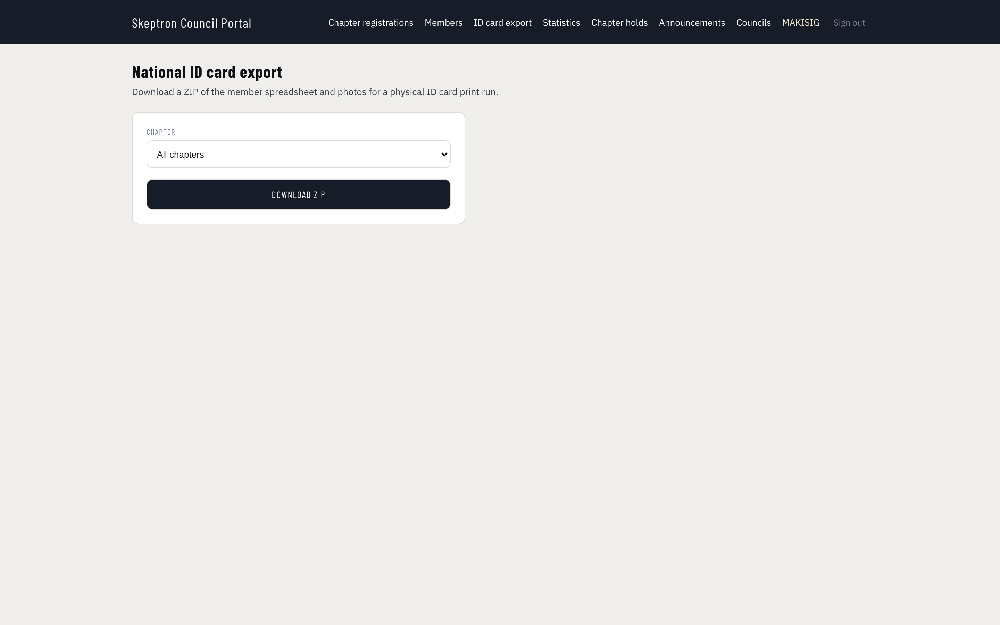</button><figcaption><span class="num">37</span>National ID card export</figcaption></figure>
      <figure><button class="frame" type="button">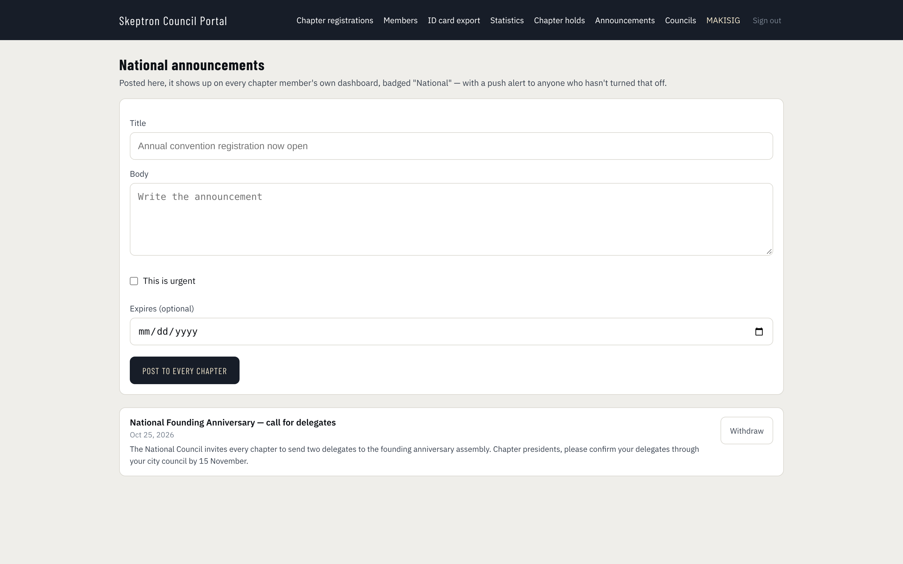</button><figcaption><span class="num">38</span>National announcements</figcaption></figure>
    </div>
  </div>
</div></section>

<!-- ============ RENEWAL ============ -->
<section class="mod" id="renewal"><div class="wrap">
  <div class="mod-head"><span class="code">Central Portal · not yet built</span><h2>Central Portal: annual renewal</h2><span class="who">Planned users: Chapter Admin (submit); council officers (approve); members (receive seal)</span></div>
  <div class="mod-body">
    <div class="text">
      <p class="purpose">The yearly renewal of every chapter and member, with a fee, an approval chain up the councils, and an escalation clock. This is the Portal's main job in the specification, and it is <b>not available in the app yet</b>.</p>
      <div><h3>What exists today</h3><ul>
        <li>Database tables: renewal periods, fee splits, chapter and member renewals, payments, acknowledgement receipts, year seals, Philippine public holidays.</li>
        <li>Three stored procedures: submit a chapter renewal; approve it as one transaction (member status, credentials, seals, receipt and audit); and count working days elapsed, skipping holidays, for escalation.</li>
        <li>Council statistics already show Renewed, Lapsed, Exempt and Not recorded counts, but nothing in the app can produce new renewals.</li>
      </ul></div>
      <div><h3>What is missing</h3><ul>
        <li>The API endpoints and every screen: submission, fee posting, the approval queue, overrides by a higher council, receipt voiding and countersigning.</li>
        <li>The year seal on the digital ID and the commemorative year card.</li>
      </ul></div>
      <div class="guard"><h3>Rules already fixed in the design</h3><ul>
        <li>The membership year runs 9 August to 8 August. "Renewed through" is always an 8 August date.</li>
        <li>Lapsed is not disciplinary.</li>
        <li>An application cannot be approved while its fee is unposted.</li>
        <li>Receipt numbers are never reused or deleted. A mistake is voided with a reason and a countersignature.</li>
        <li>The escalation clock counts working days and respects Philippine public holidays.</li>
      </ul></div>
    </div>
    <div class="text">
      <div class="note"><strong>Suggested framing for the seminar</strong>
        <p>Present renewal as the next phase, using the rules above. Everything renewal depends on is already working: member records, the council tree, approval routing, officer verification and the digital ID. Do not demonstrate it or promise a date unless the development team has confirmed one.</p>
      </div>
    </div>
  </div>
</div></section>
</main>

<footer class="wrap">
  <p>Screens were captured from the application code on branch <span class="num">ccr-37208aaa-ew5604</span> using demo data. To capture them again after a change, run <span class="num">scripts/screenshots/capture.cjs</span>.</p>
  <p>Specification: <span class="num">docs/AIS-Project-Documentation.md</span>. Project rules: <span class="num">CLAUDE.md</span>.</p>
</footer>

<dialog id="lightbox" aria-label="Enlarged screen">
  <div class="bar"><span id="lb-cap"></span><button type="button" id="lb-close">Close</button></div>
  
</dialog>
<script>
(function () {
  var dlg = document.getElementById("lightbox");
  var img = document.getElementById("lb-img");
  var cap = document.getElementById("lb-cap");
  document.querySelectorAll(".frame").forEach(function (btn) {
    btn.addEventListener("click", function () {
      var src = btn.querySelector("img");
      img.src = src.src; img.alt = src.alt;
      var fc = btn.parentElement.querySelector("figcaption");
      cap.textContent = fc ? fc.textContent : "";
      if (dlg.showModal) dlg.showModal(); else dlg.setAttribute("open", "");
    });
  });
  document.getElementById("lb-close").addEventListener("click", function () { dlg.close(); });
  dlg.addEventListener("click", function (e) { if (e.target === dlg) dlg.close(); });
})();
</script>
